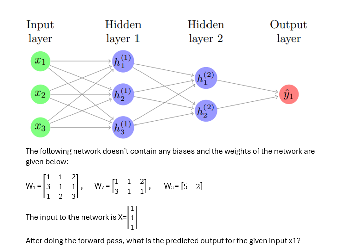
Enter your answer up to 3 decimals (hint: choose numerical values up to 3 decimals in each calculation involved to solve this) (1 Point)
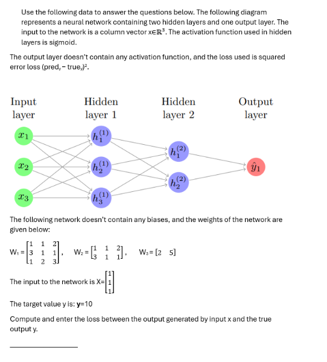
(hint: choose numerical values up to 3 decimals in each calculation involved to solve this) (1 Point)
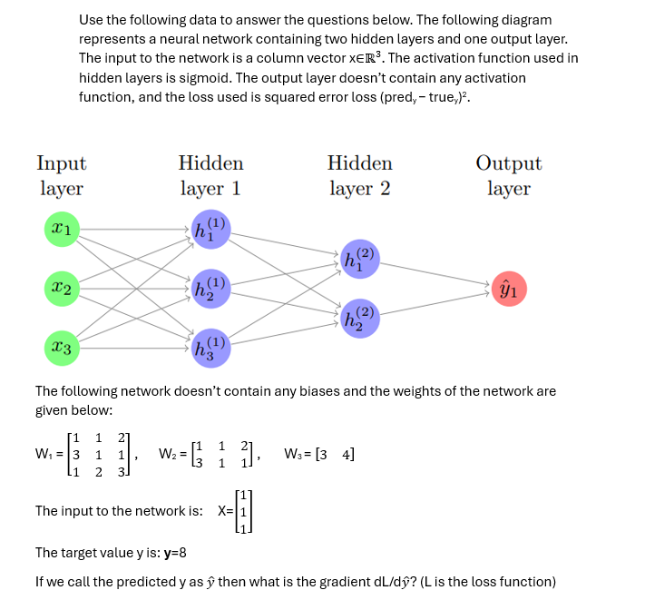
(1 point)
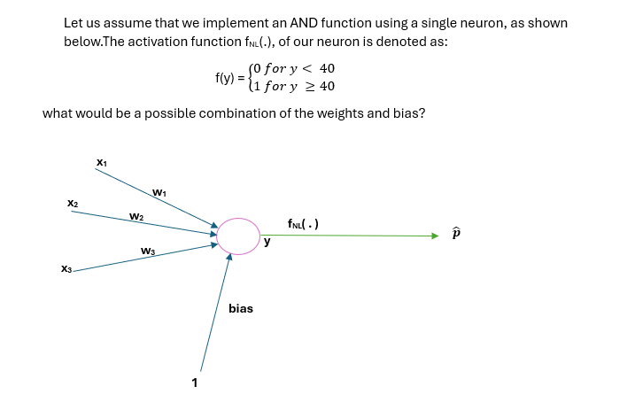
(1 Point)
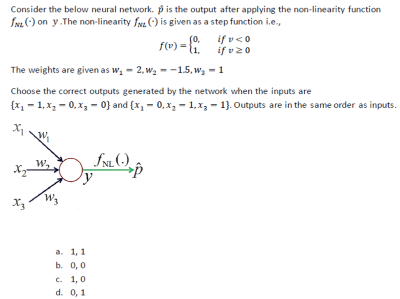
(1 Point)
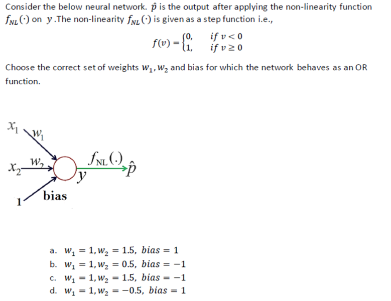
(1 Point)
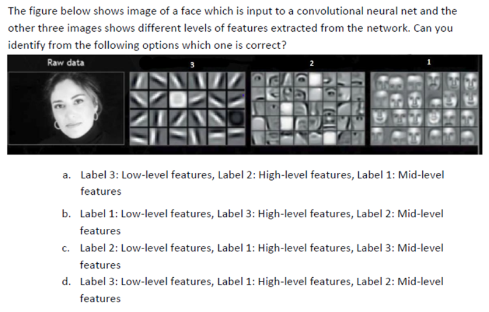
(1 Point)
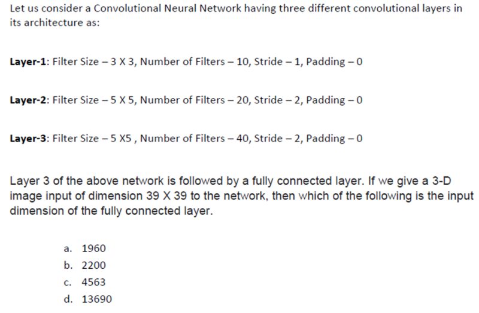
(1 Point)
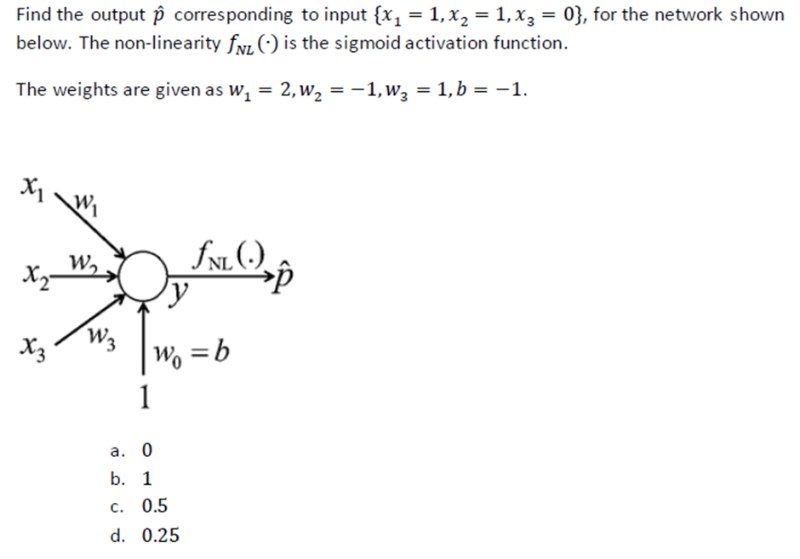
(1 Point)
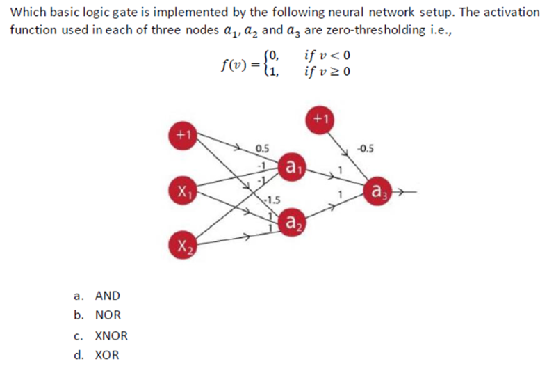
(1 Point)
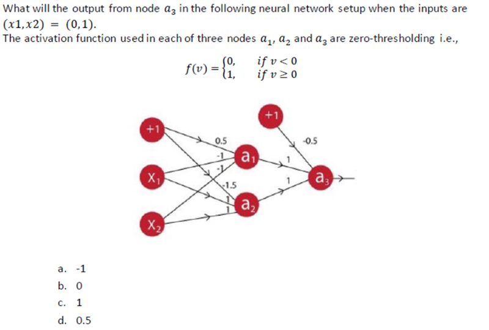
(1 Point)
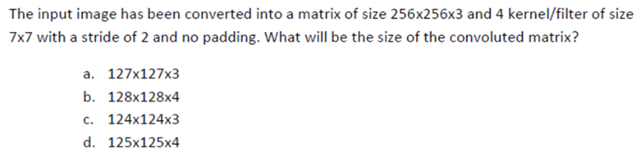
(0.5 Points)
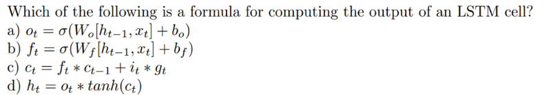
for k = 3, use KNN regression to find the corresponding neighbours for a new data-point (3,7) (Use Euclidean distance measure for finding closest points) MSQ (1 Point)
for k = 3, use KNN regression to find the prediction for a new data-point (3,7) (Use Euclidean distance measure for finding closest points) (1 Point)
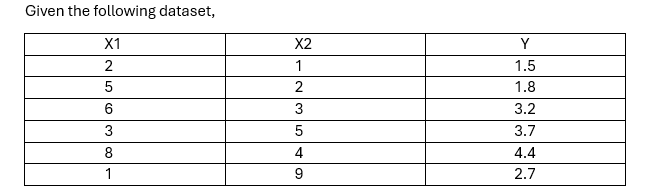
(1 Point)
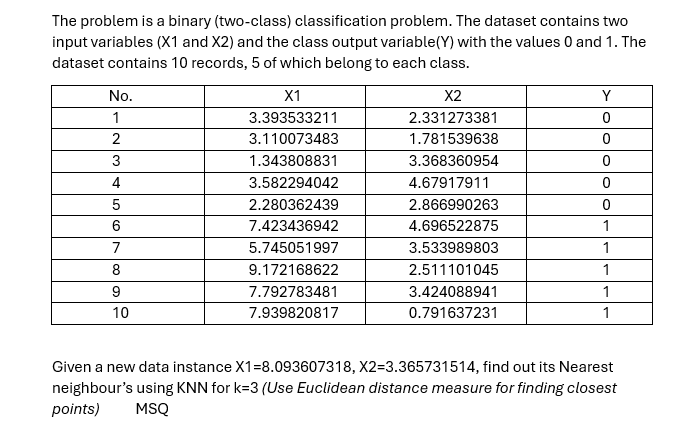
(1 Point)
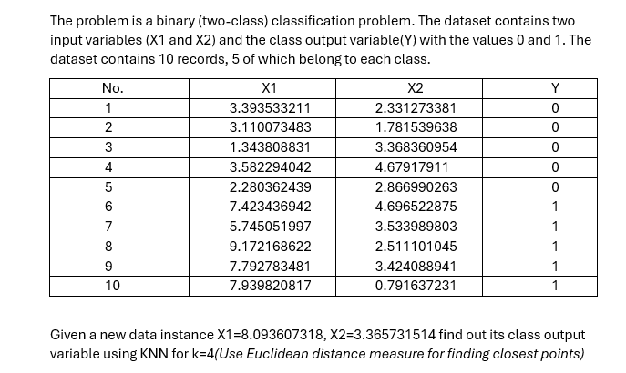
Given the data in the Table, reduce the dimension from 2 to 1 using the Principal Component Analysis (PCA) algorithm. find the covariance matrix for the PCA algorithm (1 Point)
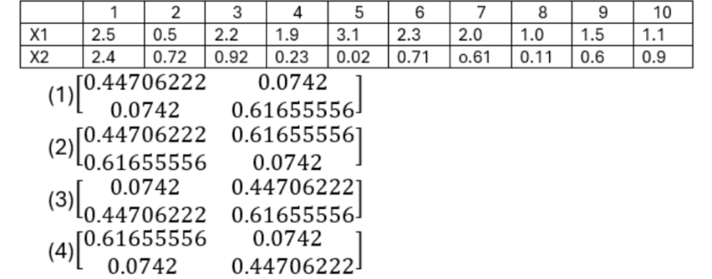
Given the data in the Table, reduce the dimension from 2 to 1 using the Principal Component Analysis (PCA) algorithm. find the eigenvalues and corresponding eigenvectors of the covariance matrix. (1 Point)
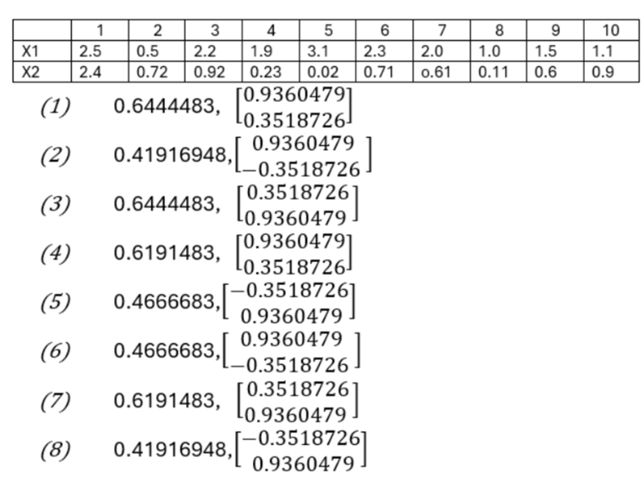
Given the data in the Table, reduce the dimension from 2 to 1 using the Principal Component Analysis (PCA) algorithm. find the transformed data (1 Point)
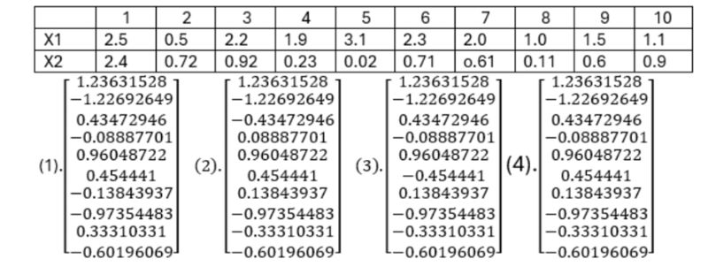
Given the following 3D input data, identify the principal component. 1 1 9 2 4 6 3 7 4 4 11 4 5 9 2 (Steps: Centre the data, calculate the sample covariance matrix, calculate the eigen vectors and eigen values, identify the principal component) (1 Point)
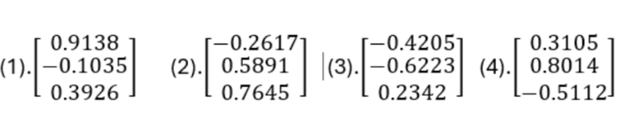
Given the following 3D input data, find the transformed input along the first two principal components.
1 1 9
2 4 6
3 7 4
4 11 4
5 9 2
(Steps: center the data, calculate the sample covariance matrix, calculate the eigen vectors and eigen values, and identify the principal component) (1 Point)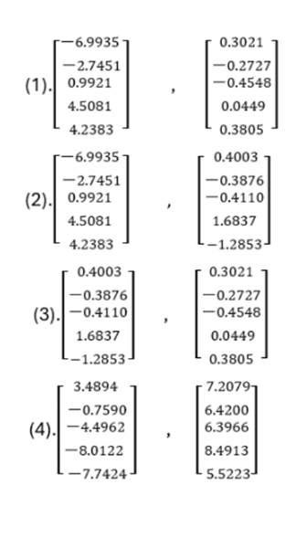